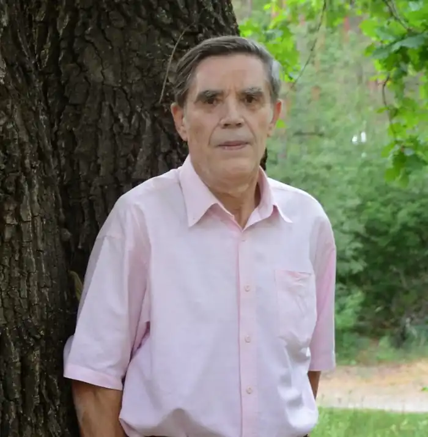
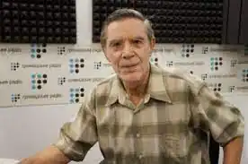

Перебийніс Петро Мусійович — поет, драматург.
Народився 06 червня 1937 року, с.Слобода Шаргородська, Шаргородський район, Вінницька область.
Закінчив в 1956 році Шаргородський сільськогосподарський технікум, у 1965 році факультет журналістики Львівського університету ім.І.Франка. Працював у пресі Вінниччини, редактором тернопільської обласної газети "Ровесник" (1966-1970), заступником головного редактора журналу "Дніпро" (1973— 1974), головним редактором видавництва "Дніпро" (1979-1980), головним редактором газети "Літературна Україна" (1980-1981), головним редактором журналу "Київ" (1986-2000), головним редактором газети "Літературна Україна" (2003-2008). Друкується з 1955 року. Автор збірок поезій: "Червоний акорд" (1971), "Високі райдуги" (1973), "Передчуття дороги" (1975), "Ранкові сурми" (1976), "Гроно вогню", "Червоний колір" (обидві‑ 1977), "Небо твоє і земля" (1979), "Світловий рік" (1982), "Третя спроба" (1983), "Пісня пам'яті" (1984), "Присягаю Дніпром!" (1985), "Срібне весілля" (1986), "Дар Вітчизни" (1987), "Точний час" (1990), "На світанку роси" (1996), "Княжа Лука" (1999), "Калинова пісня" (у співавторстві), "Чотири вежі" (у двох томах) (усі ‑ 2004), "Пшеничний годинник" (2005), ліричної трагедії "Коридор" (1995, 2009) та ін. Твори поета перекладено білоруською, російською, молдавською, грузинською, вірменською, азербайджанською, туркменською, латиською, литовською, башкирською, англійською, німецькою, польською, румунською, угорською, ідиш та іншими мовами світу. Композитори О.Білаш, В.Кирейко, В.Костенко, В.Литвин, І.Сльота, Ю.Михайленко, Б.Юрків, В.Лузан, Є.Дигас, В.Папаїка, В.Добровольська створили пісні на вірші поета. Лауреат Шевченківської премії 2008 р. за збірку поезій "Пшеничний годинник".